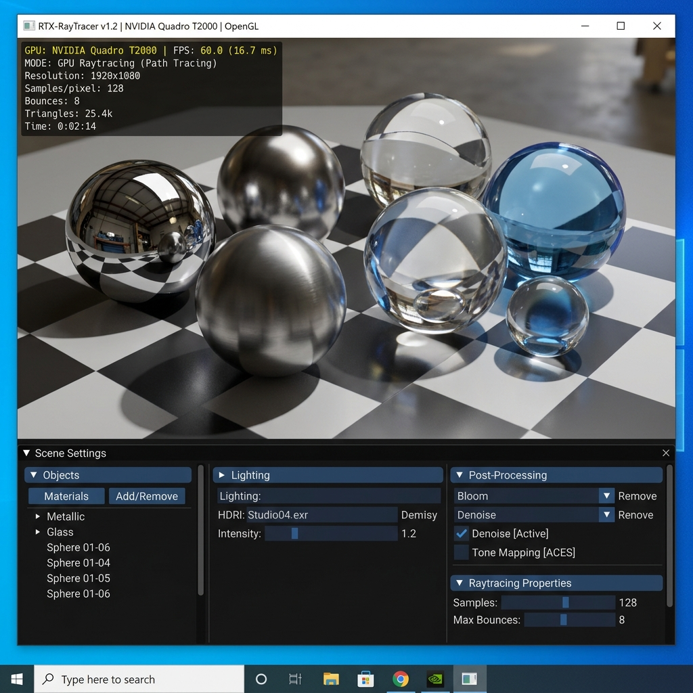

Engine Screenshot

Key Capabilities
KD-Tree Spatial Acceleration
Constructs hierarchical bounding volumes (KD-Trees) in C++ to achieve O(log N) ray-geometry intersection queries for complex scenes.
Discrete GPU Direct Export
Exports `NvOptimusEnablement` and `AmdPowerXpressRequestHighPerformance` flags at load time to bypass integrated graphics and lock discrete GPU hardware.
Photorealistic Material Shaders
Implements Fresnel equations, smooth specular metal reflections, glass refraction with index of refraction (IOR), and ACES tone mapping.
Dual Engine CPU/GPU Modes
Features dynamic switching between CPU multithreaded raytracing and GPU GLSL path tracing with interactive scene setting controls.
GitHub Repository
Explore Source Code on GitHub
Access the complete repository, project commits, architecture documentation, and codebase on GitHub.
Open GitHub Repository